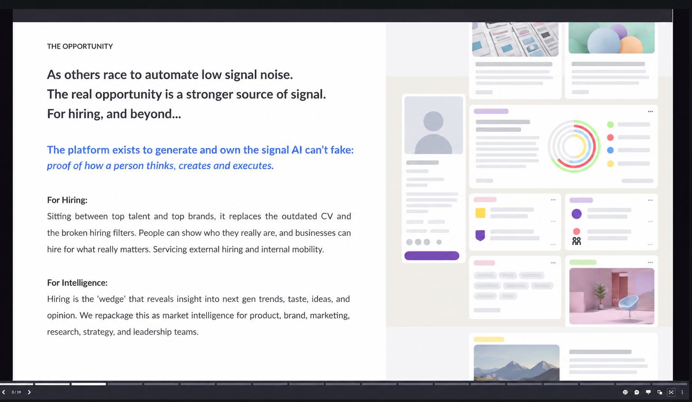
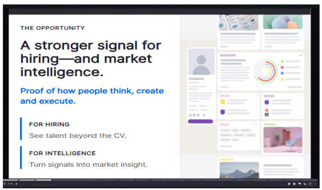

1 — As presented
The original slide used in the pitch.

Find the gaps. Strengthen the story. Prepare for the questions.
An independent view of what an investor can understand, believe and challenge.
Can an investor understand your business? Can they believe the evidence behind your claims? Can they see what the funding will achieve? Test the case before they do.
02Review the questions investors are asking and test how robust your pitch really is.
03Rehearse the meeting and practise the pitch, then sharpen your answers and prepare to explain the case under pressure.
This is an anonymised slide from a real investment pitch. The information is there, but the point is not clear enough. Here is what I would change.
The original slide used in the pitch.

The same slide, with a clearer message and less for the investor to absorb.

The slide design is unchanged. Only the words have been edited: a more direct headline, one core claim and two commercial uses that are easier to scan.
Real pitch slide, anonymised. The improved version shows a proposed copy edit, not a client result.
I review the investment case, the pitch and the questions an investor is likely to ask. You receive a written assessment, three priorities and a feedback conversation.
Over my career, I have worked with teams across BP, HSBC, Vodafone, the NHS and the Ministry of Defence. I also have more than 24 years’ experience developing speakers and leaders.
“Alongside his excellent organisational, delivery and communication skills, Pedro’s unique quality is the wealth of experience, wisdom and intuition that he naturally brings every day … offering highly considered and tangible insight to the bigger picture.”
SPA works closely with AdvisoryLondon Networks for regulated capital advisory, investor access and EIS/SEIS support for suitable businesses.
Visit AdvisoryLondonAdvisoryLondon Networks Limited (FRN 949596) is an Appointed Representative of Leela Regulatory Solutions Limited, authorised and regulated by the Financial Conduct Authority (FRN 845185).
Tell me what you are raising, where you are with the pitch and what is coming next. You can expect a reply within two working days.
Start a conversation
The slide contains useful thinking, but the investor has to absorb two applications, several claims and a dense product image at once. The main commercial point is difficult to pick out.